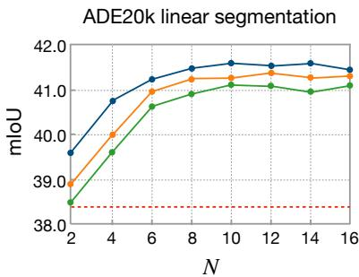

Figure 2Figure 2. TC-JEPA: conditioning the I-JEPA predictor $g _ { \phi }$ on text captions using a fine-grained text conditioner. Conditioning is applied to the patch features predicted at multiple layers of $g _ { \phi } .$ , using cross attention over the word embedding sequences $\{ t ^ { 1 } , \ldots , t ^ { N } \}$ extracted for N captions. This leads to multi-caption-conditioned patch features that are then max-pooled at each layer. Our text conditioning process is akin to self-supervised visual grounding, which identifies the fine-grained patch-word correspondences that are only optimized for target feature prediction. To further improve the self-supervised process, for conditioning with each $( n ^ { t h } )$ caption, we impose sparsity constraint $\mathcal { L } _ { \mathrm { s p a r s e } } ^ { n }$ and cross-layer consistency constraint $\mathcal { L } _ { \mathrm { c o n s i s t e n c y } } ^ { \hat { n } }$ on the patch-word similarities.

Figure 12Figure 12. Robustness to synthetic caption quality. We train the ViT-L/16 encoder on the YFCC15M dataset, which is enriched with synthetic captions of varying quality generated by different models (ShareGPT4V, LLaVA-1.5 and InstructBLIP). We compare downstream performance as a function of synthetic caption quantity N. We also compare with the baseline that uses only the N = 1 raw caption from YFCC15M for TC-JEPA training.
它真正改变的是训练信号，而不是榜单数字
caption-conditioned masked feature prediction with sparse cross-attention text conditioner。这类工作值得被放在通用视觉自监督日报里，不是因为它一定立刻刷新所有 benchmark，而是因为它改变了模型“从哪里拿监督”的方式。
MinerU full.md is now part of the source bundle for this page; the next pass will use it for paper-native English quotes and tighter argument writing.